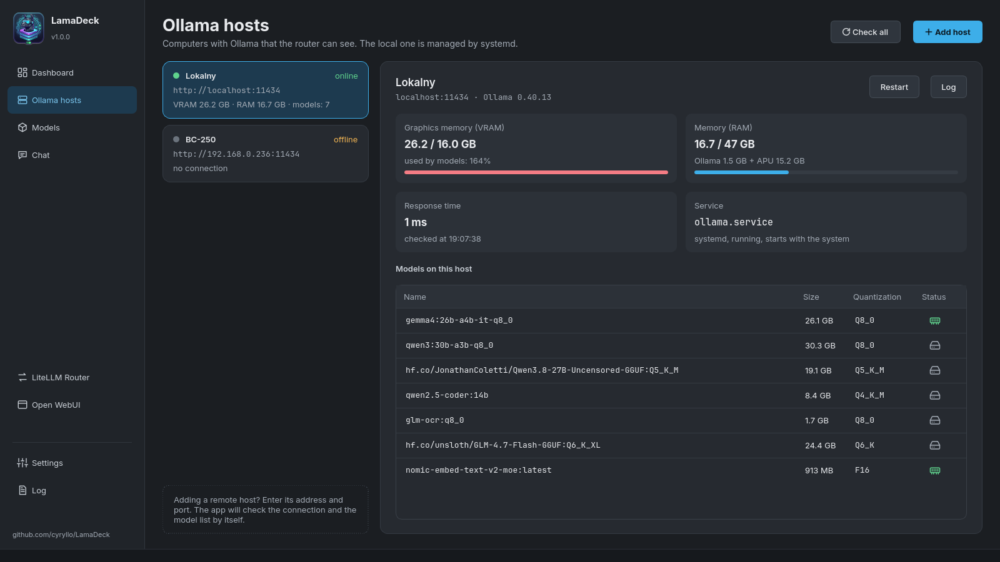
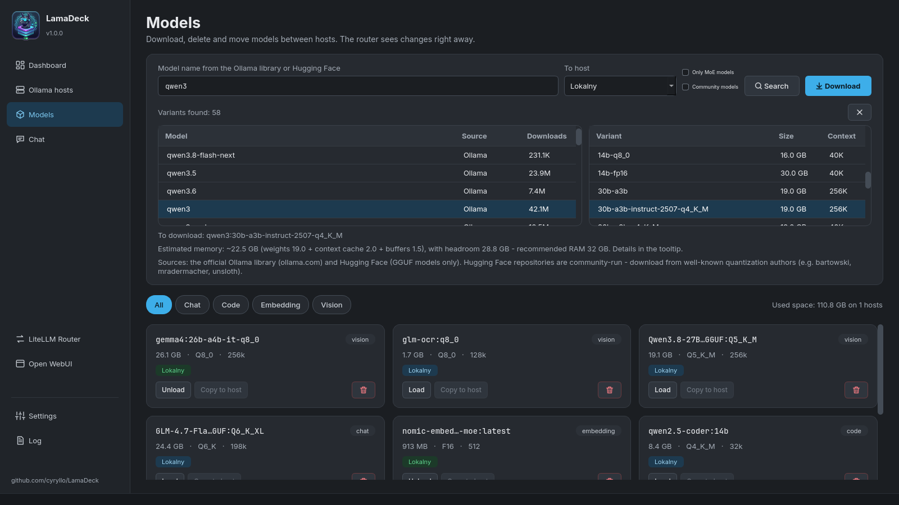
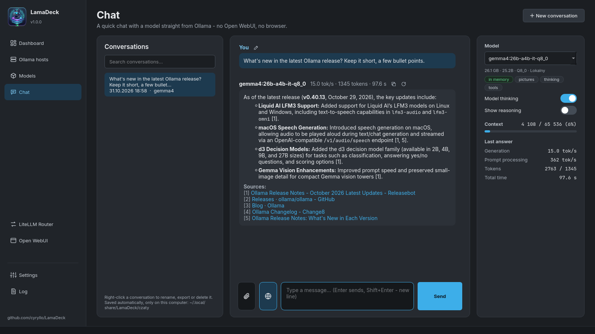
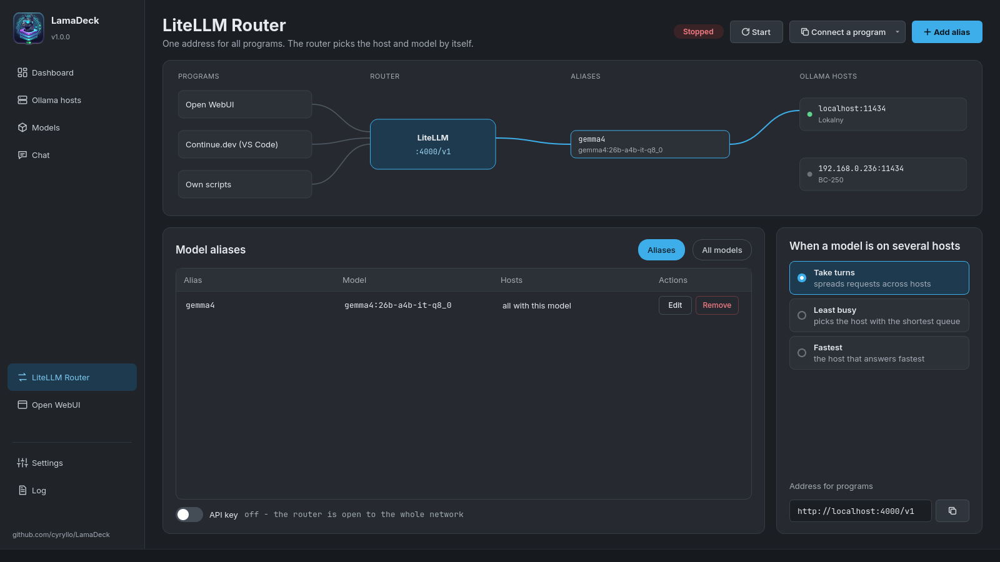
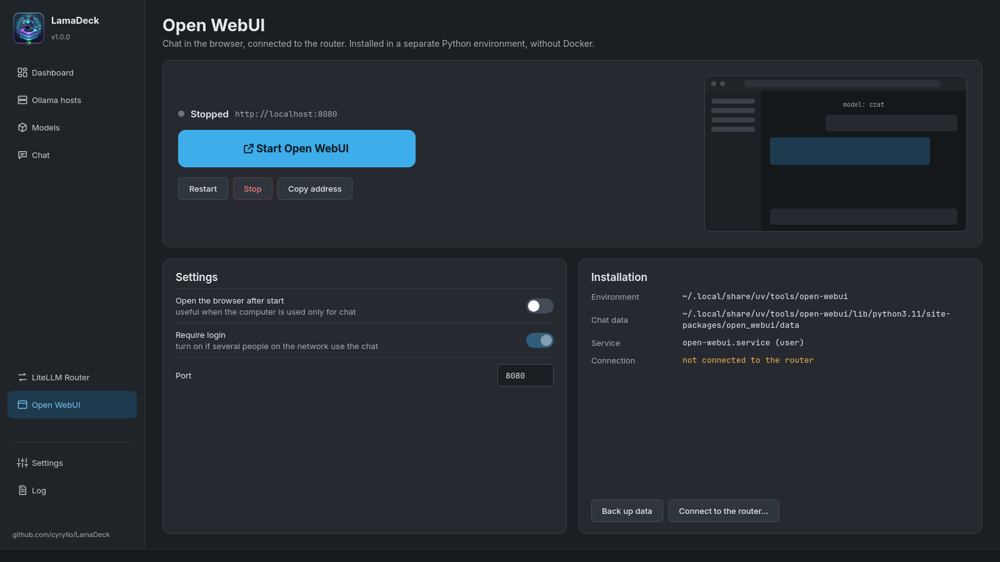
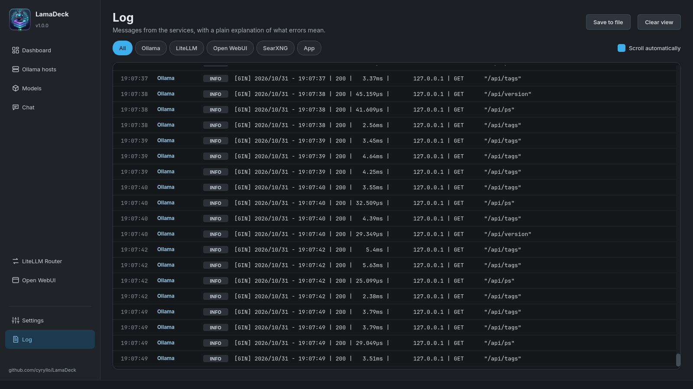
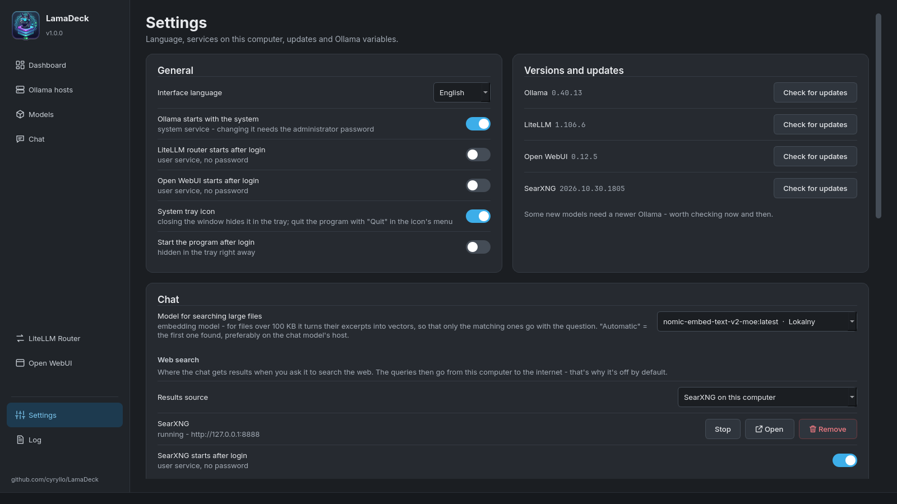
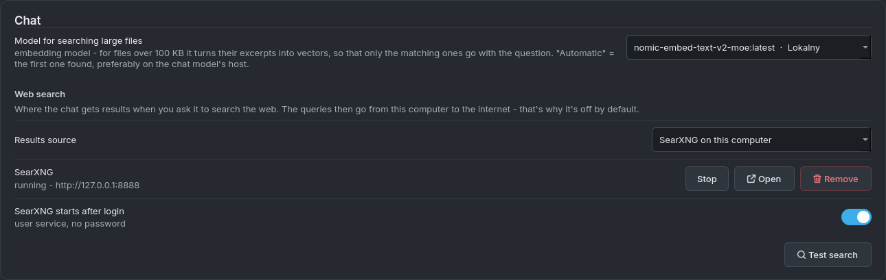

LamaDeck user guide
What LamaDeck can do, and how to turn each part on. Every screen is described in the order it appears in the sidebar. (Po polsku: PRZEWODNIK.md)
Installation and first start
Debian / Ubuntu — add the APT repository once, then LamaDeck updates together with the system:
sudo curl -fsSLo /usr/share/keyrings/lamadeck-archive-keyring.gpg \
https://cyryllo.github.io/LamaDeck/apt/lamadeck-archive-keyring.gpg
sudo curl -fsSLo /etc/apt/sources.list.d/lamadeck.sources \
https://cyryllo.github.io/LamaDeck/apt/lamadeck.sources
sudo apt update
sudo apt install lamadeckThe .deb file from the releases page works too: sudo apt install ./lamadeck_*_all.deb adds the same repository.
Any other distribution — download LamaDeck-<version>-x86_64.AppImage from the releases page, then chmod +x LamaDeck-*-x86_64.AppImage and run it. On the first start it asks whether to add itself to the applications menu.
You'll find LamaDeck in the menu under Utilities. Everything else — Ollama, the router, Open WebUI, SearXNG — is installed from inside the app, with one button each.
You don't need a terminal for anything below. When an action needs administrator rights (installing Ollama, changing its settings), the usual KDE password dialog appears.
Dashboard

The first screen shows the whole stack on this computer:
- Ollama — the switch starts and stops the Ollama service. The card lists the hosts that are online, the models loaded in memory and the GPU load.
- LiteLLM Router — one address for all your programs (see LiteLLM Router).
- Open WebUI — the big button means Install, Start or Open in browser, depending on the state.
- Computer resources — CPU, VRAM and RAM, network traffic and processor load, updated every two seconds.
Installing the services: a card of something that isn't installed yet shows an Install button instead of the switch. Ollama is installed with its official script (asks for your password); the router and Open WebUI install for your user only, without a password and without Docker. The installation runs in the background, and you get a desktop notification when it finishes.
At the top, All services starts or stops everything in the right order, Restart restarts it, and Stop all stops it.
Ollama hosts


LamaDeck can manage Ollama on several computers at once — this one and others on your home network.
- Add host — type the other computer's address (e.g.
192.168.0.236).http://and port11434are added for you. - On the other computer, Ollama has to accept connections from the network. If it also runs LamaDeck: *Settings → Ollama environment variables →
OLLAMA_HOST* switch on, then Save. - For each host you see the Ollama version, response time, memory used by models and the list of models (green memory icon = loaded, grey disk = only on disk).
- Memory (RAM) for this computer shows what Ollama really uses. On computers with an APU (graphics built into the processor) part of a model sits in ordinary RAM shared with the GPU — shown as "Ollama X GB + APU Y GB", with details in the tooltip.
- Restart and Log work for this computer only. This computer can't be removed from the list; other hosts have a delete button.
Models


Finding and downloading a model:
- Type a name (e.g.
qwen3) and press Search. LamaDeck searches the official Ollama library and Hugging Face (GGUF files) at the same time. - Click a result — on the right you see every variant with its real file size and context length.
- Click a variant. Below you see the estimated memory it needs.
- Choose the target computer in To host and press Download. The progress bar shows size and speed; Cancel stops it, and the next download continues where it stopped.
If you know the exact name (llama3.2:3b, hf.co/user/repo:Q4_K_M), type it and press Enter — the download starts right away. A pasted link to ollama.com or huggingface.co opens the variants of that model.
Filters next to the search field:
- Only MoE models — mixture-of-experts models only. They compute just a part of the model per word, so they run much faster on APUs and computers without a strong graphics card.
- Community models — also models other people published on ollama.com (
author/model). They're hidden by default, because Ollama doesn't review them.
Installed models are shown as tiles from all hosts, filterable by kind (Chat, Code, Embedding, Vision). Each tile has Load / Unload (to or from memory), Copy to host (downloads the same model on another computer) and the delete button.
Chat


A simple chat with any model on any host, straight from Ollama — it works without Open WebUI and without the router.
Basics:
- Choose the model on the right. Tags under it say what it can do: pictures, thinking, tools, and whether it's already in memory.
- Enter sends, Shift+Enter starts a new line. While the model writes, Send turns into Stop.
- Under every answer: tokens per second, the number of tokens and the time. The right panel shows the details and Context — how much of the model's memory for the conversation is used. From 80% you get a warning; then start a New conversation.
- Model thinking turns reasoning on or off for models that think before answering (qwen3, gemma4…) — off, short answers come in a fraction of a second. Show reasoning shows it in the conversation.
- Icons next to an answer: copy the answer, regenerate it (with the model chosen now — handy for comparing models), and edit the last question. The icon above a code block copies just that code.
Attachments — the paperclip button, dragging a file onto the window, or Ctrl+V with a screenshot:
- pictures (for models tagged pictures),
- documents: PDF, Word, Excel, PowerPoint, LibreOffice, EPUB,
- text files: code,
.txt,.md,.csv… - Files over 100 KB (up to 20 MB) are searched by excerpts instead of being pasted whole. This needs an embedding model — Settings → Chat → Model for searching large files; if you have none, the Download button there gets the recommended one.
Links: paste a link into the question and LamaDeck downloads the page itself and adds its text.
Web search (the answer cites its sources [1], [2]…):
- Settings → Chat → Web search → Results source — choose SearXNG on this computer and press Install (a few minutes, no password). Or choose your own SearXNG server, or Ollama with an API key from your free ollama.com account.
- Test search checks that it works.
- In the chat, click the globe button next to the paperclip — it lights up blue. Every question is now searched on the internet until you click it again.
The model writes 1–3 search queries, LamaDeck reads up to 5 pages, picks the passages that match your question, and the answer lists the clickable sources below. In the bubble you can see what it's doing at the moment.
Conversations are saved automatically after every answer (only on this computer). The list on the left opens them and searches titles and content. Right-click a conversation to Rename (also double-click or F2), Export to Markdown or Delete.
LiteLLM Router


The router gives all your programs one address, http://localhost:4000/v1 (OpenAI-compatible), behind which are the models of all your hosts.
- Start runs it. Changes to routes take effect after Restart the router — a bar reminds you.
- Add alias — a fixed name such as
codeorchatfor a chosen model. Programs use the alias, so you can swap the model behind it without changing anything in them. - When a model is on several hosts — take turns, least busy, or fastest.
- All models — which models the router offers under their own names.
- Connect a program — ready settings for Continue.dev (a
config.yamlto copy) and step-by-step instructions for Open WebUI. - API key — off by default (anyone on your network can use the models); on, the key is added to the Continue settings.
Open WebUI


A full chat in the browser (user accounts, knowledge bases, voice) — installed without Docker.
- The big button installs, starts or opens Open WebUI in the browser. Restart, Stop and Copy address are below.
- Settings: open the browser after start, Require login (can be turned off only while there are no accounts), and the port.
- Back up data saves all chats and accounts to a ZIP file.
- Connect to the router... shows how to add the router in Open WebUI, so it sees the models of all your hosts.
Log


Messages from Ollama, LiteLLM, Open WebUI, SearXNG and LamaDeck itself in one place. The buttons at the top filter by service. Errors come with a plain explanation of what they mean and, where it applies, a link to the host. Save to file keeps the log; Clear view only hides it.
Reading the Ollama service log needs permission: Load now reads it once (asks for your password), Allow permanently adds your account to the systemd-journal group (works after you log in again).
Settings


- Interface language — seven languages, the change is immediate.
- Autostart — Ollama with the system, the router and Open WebUI after login.
- System tray icon and Start the program after login — see System tray.
- Versions and updates — Check for updates for Ollama, LiteLLM, Open WebUI and SearXNG. Nothing updates by itself.
- Chat — the model for searching large files and the web search source (see Chat):


- Ollama environment variables (lower on the same screen) — each with a short description. Apply recommended values fills in a starting set (16k-token context, 30 minutes in memory, two models at once, Vulkan for AMD graphics) — it only fills the form, so look it over first. Save writes everything at once and restarts Ollama once (asks for your password).
System tray

Turn on Settings → System tray icon. Then:
- left click on the icon — this small panel: service switches, CPU / VRAM / RAM, models in memory, Open chat and Open the control panel,
- middle click — the main window, right click — the menu with Quit,
- closing the window only hides it in the tray; quit with Quit in the icon's menu,
- Start the program after login starts LamaDeck already hidden in the tray.
Where your data is
| What | Where |
|---|---|
| Settings | ~/.config/LamaDeck/LamaDeck.conf |
| Chat conversations | ~/.local/share/LamaDeck/czaty/ |
| SearXNG | ~/.local/share/LamaDeck/searxng/, settings in ~/.config/LamaDeck/searxng/ |
| Router settings | ~/.config/LamaDeck/litellm_config.yaml |
| Open WebUI | ~/.local/share/uv/tools/open-webui/ |
Removing or updating LamaDeck doesn't touch any of these. Nothing leaves your computer, except web searches you turn on yourself.
Problems
- A host is "offline" — check that the computer is on and that Ollama there accepts network connections (
OLLAMA_HOST, see Ollama hosts). The log explains the error. - The model forgets the beginning of the conversation — the context is full (the bar in the chat turns red). Start a new conversation or raise
OLLAMA_CONTEXT_LENGTHin Settings. - A big file or web search waits a long time — the embedding model is loading next to the chat model. With
OLLAMA_MAX_LOADED_MODELS=2(one of the recommended values) both stay in memory. - A web search gives no results — press Test search in Settings; SearXNG may be stopped. Some search engines occasionally ask for a captcha; SearXNG then uses the others.
Found a bug? Report it on GitHub.